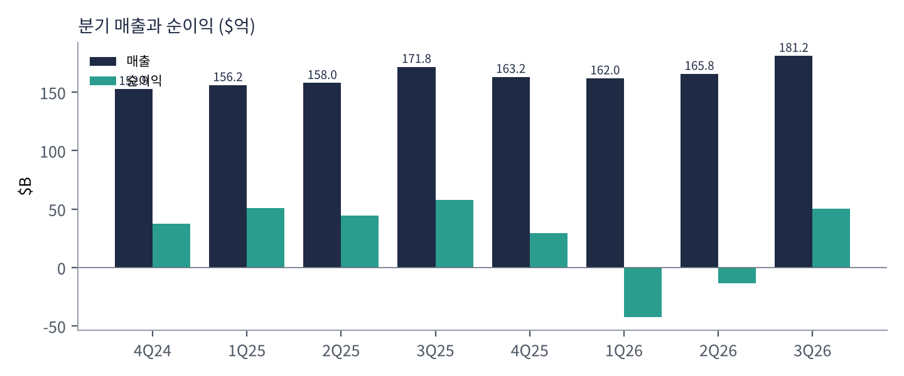
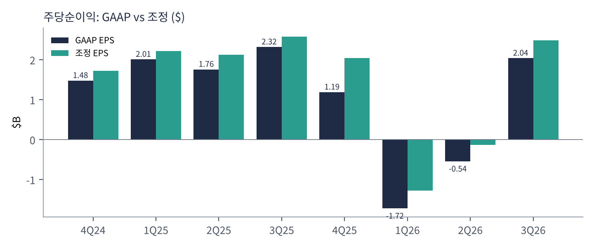
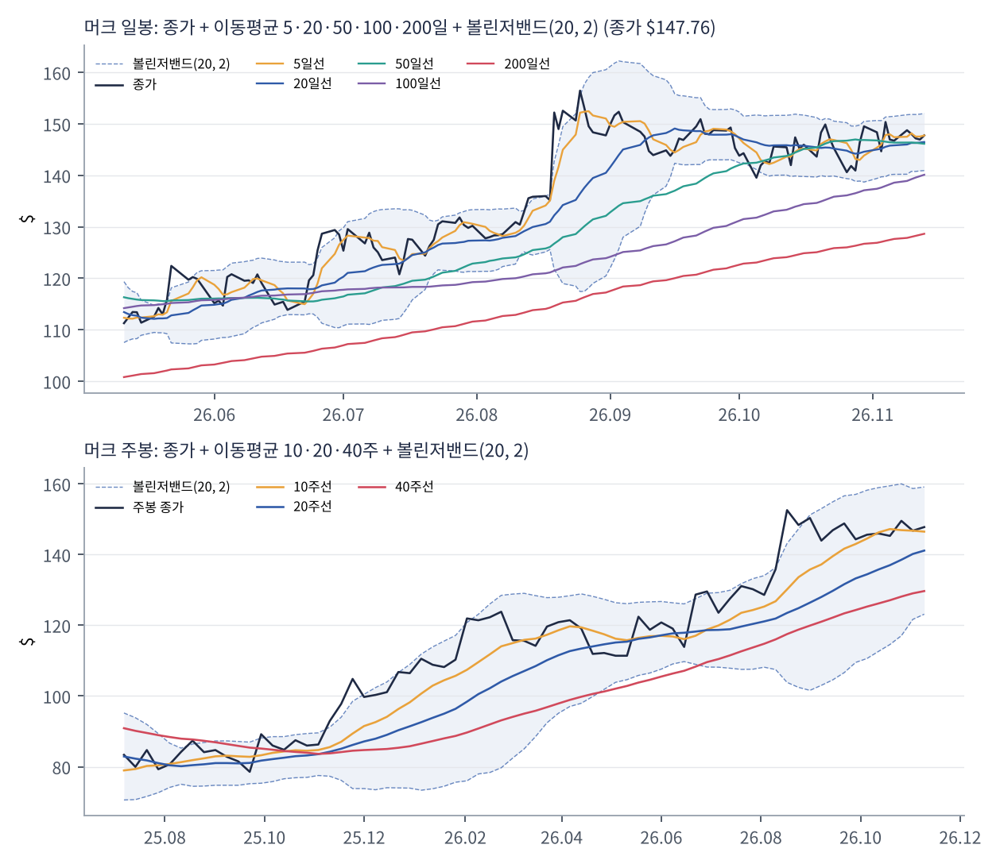
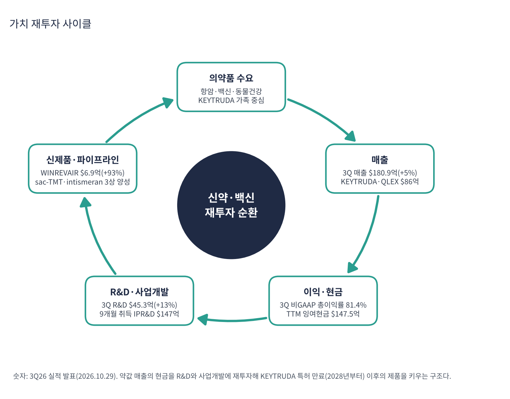

머크는 항암제 KEYTRUDA, 백신, 동물건강 제품을 파는 미국 제약사다. KEYTRUDA 의존과 2028년 특허 만료, 대규모 취득 IPR&D 비용으로 GAAP PER이 151배로 왜곡돼 있지만, 영업현금이 두터운 대형 제약사다.
| 항목 | 내용 |
|---|---|
| 종목 | Merck & Co. (MRK) · NYSE · 제약·백신·동물건강 · 뉴저지 래웨이 |
| 멀티플 | PER 150.9배(TTM, GAAP, IPR&D 비용으로 왜곡) · P/S 5.42배 (11/13 종가 $147.76) |
| 최근 분기(3Q26) | 매출 $180.9억(+5%), GAAP EPS $2.04, 비GAAP EPS $2.49(SciBrunch $0.12 포함) |
| 가이던스(2026) | 매출 $668~673억, 비GAAP EPS $2.77~2.82, 비GAAP 총이익률 약 81% |
| 현금·부채 | 스캐너: 현금 $97.5억, 총차입금 $537.8억, TTM 잉여현금 $147.5억 |
| 직책 | 인물 | 역할·특징 |
|---|---|---|
| 회장·CEO | 로버트 데이비스(Robert Davis) | 과학 주도 전략으로 KEYTRUDA 이후 성장 축을 확보 |
| CFO | 캐럴라인 리치필드(Caroline Litchfield) | 3Q 구매 시점 효과 약 $5.5억과 4Q 되돌림을 설명 |
경영 스타일: '과학 주도 전략으로 KEYTRUDA 이후 성장 축을 사들이고 키운다'. 9개월간 Cidara·Terns 등에 취득 IPR&D $147억을 썼고 3Q에는 SciBrunch 라이선스 계약($0.12/주)이 있었다. KEYTRUDA를 피하주사 제형(QLEX)으로 옮기는 작업도 진행 중이다.
KEYTRUDA(PD-1 항체)와 피하주사형 QLEX, 폐동맥 고혈압 치료제 WINREVAIR가 핵심 제품이다.
sac-TMT(자궁내막암)와 intismeran(모더나와 공동, 흑색종) 3상에서 긍정 결과를 냈다.
다음 실적발표(4Q26)는 세 가지 질문에 답하는 자리다.
질문 1. KEYTRUDA 가족이 구매 시점 효과를 빼고도 성장하는가?
| 확인할 숫자 | 좋아지면 | 나빠지면 |
|---|---|---|
| 3Q KEYTRUDA·QLEX $86억(+6%), QLEX $8.3억. 3Q 매출에 구매 시점 효과 약 $5.5억(KEYTRUDA $2억·WINREVAIR $0.5억·백신 $3억)이 있었고 4Q에 되돌려질 전망(회사 설명) | 되돌림 후에도 성장하면 ②매출 고리가 견고하다 | KEYTRUDA가 줄면 특허 만료 전 성장 둔화 우려가 커진다 |
질문 2. 연간 가이던스를 달성하는가?
| 확인할 숫자 | 좋아지면 | 나빠지면 |
|---|---|---|
| 2026 매출 $668~673억, 비GAAP EPS $2.77~2.82(SciBrunch $0.12 포함), 비GAAP 총이익률 약 81%, 영업비용 $424~429억 | 범위 안이면 ③이익 고리가 유지된다 | 하단 미달이면 R&D·사업개발 비용 부담이 커진 것이다 |
질문 3. KEYTRUDA 이후 성장 축이 커지는가?
| 확인할 숫자 | 좋아지면 | 나빠지면 |
|---|---|---|
| WINREVAIR 3Q $6.9억(+93%), sac-TMT·intismeran 3상 양성, KEYTRUDA 특허 만료 2028년부터 | 신제품 매출이 커지면 ⑤신제품 고리가 채워진다 | 성장이 더디면 특허 만료 공백 위험이 커진다 |
한 줄 판정 규칙: 첫 질문에서 KEYTRUDA가 구매 시점 효과를 빼고도 성장하면 약한 고리(KEYTRUDA 의존·특허 만료)가 완화되고, 이익이 가이던스 하단이면 재투자 부담이 커진다.
일정: 2027-02-02 예정(트레이딩뷰 일정, 회사 확정 확인 필요).
| 분기 | 매출 | 순이익 | EPS | 조정 EPS | 특이 사항 |
|---|---|---|---|---|---|
| 4Q24 | $152.9억 | $37.4억 | 1.48 | 1.72 | |
| 1Q25 | $156.2억 | $50.8억 | 2.01 | 2.22 | |
| 2Q25 | $158.0억 | $44.3억 | 1.76 | 2.13 | |
| 3Q25 | $171.8억 | $57.9억 | 2.32 | 2.58 | |
| 4Q25 | $163.2억 | $29.6억 | 1.19 | 2.04 | |
| 1Q26 | $162.0억 | $-42.4억 | -1.72 | -1.28 | 취득 IPR&D 비용(Cidara·Terns 등)으로 GAAP·조정 모두 적자 |
| 2Q26 | $165.8억 | $-13.3억 | -0.54 | -0.13 | 취득 IPR&D 비용 반영, GAAP·조정 모두 적자 |
| 3Q26 | $181.2억 | $50.6억 | 2.04 | 2.49 | SciBrunch 일회성 -$0.12/주 포함, 구매 시점 효과 약 $5.5억 |


값은 트레이딩뷰 스캐너 분기 이력이다. 3Q26 매출은 스캐너 $181.2억이고 회사 발표 매출은 $180.9억이다. 조정 EPS는 트레이딩뷰 Reported(비GAAP)이며, 머크의 비GAAP에는 취득 IPR&D 비용이 포함돼 1Q26·2Q26이 적자다. 분기 설비투자는 구하지 못했다.
흐름 요약: 매출은 4Q24 $152.9억에서 3Q26 $181.2억으로 늘었다. 1Q26~2Q26에는 취득 IPR&D 비용으로 순손실이 났고 3Q26에 순이익으로 돌아왔다.
| 항목 | 값 | 비고 |
|---|---|---|
| 3Q KEYTRUDA·QLEX | $86억(+6%) | QLEX $8.3억 |
| 3Q WINREVAIR | $6.9억(+93%) | 폐동맥 고혈압 |
| 3Q 동물건강 | $16.8억(+4%) | |
| 3Q 총매출 | $180.9억(+5%) | 구매 시점 효과 약 $5.5억 포함 |
KEYTRUDA 가족이 3Q 매출의 약 48%다(내 계산). 백신 VAXNEUVANCE는 -14%였다. 지역별·제품별 전체 표는 이번에 구하지 못했다.
머크는 '과학 주도 전략으로 KEYTRUDA 이후의 성장 축을 확보하는 것'을 목표로 한다.
| 축 | 최근 움직임 |
|---|---|
| 성장 | 2026 매출 $668~673억(+3~4%), 신제품 확대 |
| 파이프라인 | sac-TMT·intismeran 3상 양성, WINREVAIR 라벨 업데이트 |
| 위험 | KEYTRUDA 특허 만료 2028년부터, 구매 시점 효과 되돌림 |

| 이동평균 | 값 | 종가 대비 | 해석 |
|---|---|---|---|
| 5일선 | $147.74 | +0.0% | 현재가가 위 |
| 20일선 | $146.46 | +0.9% | 현재가가 위 |
| 50일선 | $146.13 | +1.1% | 현재가가 위 |
| 100일선 | $140.11 | +5.5% | 현재가가 위 |
| 200일선 | $128.64 | +14.9% | 현재가가 위 (+15%) |
주봉 흐름: 52주 고점 $156.92(8/25), 52주 저점 $90.90(11/13). 현재가 $147.76는 200일선 $128.64보다 위, 50일선 $146.13보다 위에 있다.
| 규칙 | 기준 | 현재 값 | 신호 |
|---|---|---|---|
| 장기 추세 필터 | 종가 vs 200일선 | $147.76 > $128.64 | 매수 |
| 중장기 교차 | 50일선 vs 200일선 | $146.13 > $128.64 | 매수 |
| 단기 교차 | 20일선 vs 50일선 | $146.46 > $146.13 | 매수 |
| 돈키언 채널 | 55일 고가 $154.02 / 저가 $138.80 | 중간값 $146.41 위 | 매수 |
| 1개월 모멘텀 | 21거래일 수익률 | +1.8% (기준 $145.19) | 매수 |
| 3개월 모멘텀 | 63거래일 수익률 | +8.7% (기준 $135.97) | 매수 |
| 6개월 모멘텀 | 126거래일 수익률 | +32.7% (기준 $111.38) | 매수 |
| 12개월 모멘텀 | 252거래일 수익률 | +61.6% (기준 $91.45) | 매수 |
| 종합 (8개 평균) | +1.00 | 강한 매수 |
해석: 8개 신호 중 매수 8개, 매도 0개(점수 +1.00, 강한 매수)다. 14일 ATR $4.18 (2.8%).
| 가격·조건 | 무엇이 바뀌나 | 의미 |
|---|---|---|
| $128.64 돌파 | 200일선 | 이탈하면 매수 → 매도 |
| 50일선이 200일선 위로 | 50/200 교차 | 이탈하면 매수 → 매도 |
| 20일선이 50일선 위로 | 20/50 교차 | 이탈하면 매수 → 매도 |
| 구분 | 가격대 | 근거 |
|---|---|---|
| 저항 1 | $154.02 | 55일 고점 |
| 저항 2 | $156.92 | 52주 고점 |
| 지지 1 | $147.74 | 5일선 |
| 지지 2 | $146.46 | 20일선 |
점수는 +1.00(강한 매수)다. 14일 ATR은 $4.18로 현재가의 2.8%다. 가까운 저항 $154.02을 종가로 넘는지와 가까운 지지 $147.74를 지키는지가 신호 전환의 기준이다. (내 가정, 매매 권유 아님)
| 악재 요인 | 내용 | 강도 |
|---|---|---|
| KEYTRUDA 의존·특허 만료 | KEYTRUDA 가족이 3Q 매출의 약 48%, 특허 만료는 2028년부터 | 높음 |
| 구매 시점 효과 | 3Q 매출에 약 $5.5억 포함, KEYTRUDA·WINREVAIR 몫은 4Q에 되돌려질 전망(백신 $2.5억은 2027년) | 중간 |
| 비용·IPR&D | 9개월 취득 IPR&D $147억, 3Q 비GAAP 영업비용 +12% | 중간 |
| 백신 부진 | VAXNEUVANCE -14%(미국 공공 구매 패턴 영향) | 중간 |
| 밸류에이션 | GAAP PER 151배(왜곡), PEG 산출 불가 | 중간 |
| 티커 | 회사 | PER(TTM) | PEG | P/S | EPS 성장(YoY) |
|---|---|---|---|---|---|
| MRK | 머크 | 150.9배 | – | 5.42배 | -87% |
| LLY | 일라이 릴리 | 47.4배 | 0.93 | 14.75배 | +51% |
| JNJ | 존슨앤드존슨 | 43.4배 | – | 6.99배 | -36% |
| PFE | 화이자 | 41.3배 | – | 2.61배 | -59% |
| ABBV | 애브비 | 50.8배 | 0.15 | 7.90배 | +338% |
| BMY | 브리스톨 마이어스 스퀴브 | 14.1배 | 0.26 | 2.56배 | +52% |
MRK 첫 행은 스캐너 값이다. EPS가 감소해 PEG가 산출되지 않았다. JNJ·PFE도 EPS가 줄어 PEG가 산출되지 않았다.
머크는 현금 $97.5억에 총차입금 $537.8억(순차입 약 $440.3억)이지만 TTM 잉여현금이 $147.5억이고 EBITDA가 $195.6억이다. 9개월 영업현금은 $158억이다.
| 지표 | 값 | 계산·출처 | 해석 |
|---|---|---|---|
| 현금 | $97.5억 | 스캐너 | |
| 총차입금 | $537.8억 | 스캐너 | 순차입 약 $440.3억, EBITDA 대비 약 2.3배(내 계산) |
| TTM 잉여현금흐름 | $147.5억 | 스캐너 | TTM 매출 $672.3억 대비 약 21.9%(내 계산) |
| TTM EBITDA | $195.6억 | 스캐너 | TTM 매출 대비 약 29.1%(내 계산) |
| 기준 | 값 | 비고 |
|---|---|---|
| P/S (TTM) | 5.42배 | 스캐너 |
| 동종 | LLY 14.8, ABBV 7.9, JNJ 7.0, BMY 2.6, PFE 2.6 | 11/13 스캐너 |
해석: P/S 5.4배는 LLY(14.8배)·ABBV(7.9배)·JNJ(7.0배)보다 낮고 PFE·BMY(2.6배)보다 높다. 잉여현금 마진은 약 22%다.
| 지표 | 값 | 판정 |
|---|---|---|
| PER (GAAP TTM) | 150.9배 | 스캐너, TTM EPS $0.98(IPR&D 비용 반영) |
| PER (2026 가이던스) | 약 52.8배 | $147.76 ÷ 비GAAP EPS 가이던스 중간값 $2.80(내 계산) |
| TTM 잉여현금 마진 | 약 21.9% | $147.5억 ÷ 매출 $672.3억(내 계산) |
| EBITDA 마진 | 약 29.1% | $195.6억 ÷ $672.3억(내 계산) |
| 방식 | PER | EPS 성장률 | PEG | 판정 |
|---|---|---|---|---|
| 트레이딩뷰 (GAAP TTM) | 150.9배 | -87.1% | – | 산출 불가(EPS 감소) |
| 조정(비GAAP) TTM (내 계산) | 약 47.4배 | -63.9% | – | 최근 4분기 $3.12 ÷ 직전 4분기 $8.65 |
판정: GAAP·조정 모두 EPS가 줄어 PEG를 산출할 수 없다. 투자 적격(≤1.0) 구간 여부를 판정하지 못한다.머크의 비GAAP EPS에는 취득 IPR&D 비용이 포함돼 있다. 이 비용을 뺀 PEG는 비용 규모를 이번에 구하지 못해 산출하지 못했다(확인 필요).

머크의 사이클은 의약품 수요 → 매출 → 이익·현금 → R&D·사업개발 → 신제품·파이프라인이다. 번 현금으로 신약과 인수에 재투자해 다음 매출원을 만든다.
| 고리 | 현재 숫자 | 고리 강도 | 약해지는 신호 |
|---|---|---|---|
| ① 의약품 수요 | KEYTRUDA 가족 +6%, WINREVAIR +93% | 강함 | 백신 일부 감소(VAXNEUVANCE -14%) |
| ② 매출 | 3Q $180.9억(+5%) | 보통 | 구매 시점 효과 $5.5억 4Q 되돌림 |
| ③ 이익·현금 | 3Q 비GAAP 총이익률 81.4%, TTM 잉여현금 $147.5억 | 강함 | 비GAAP 영업비용 +12% |
| ④ R&D·사업개발 | 3Q R&D $45.3억, 9개월 IPR&D $147억 | 보통 | 조정 EPS도 IPR&D에 흔들림 |
| ⑤ 신제품·파이프라인 | sac-TMT·intismeran·WINREVAIR | 보통 | KEYTRUDA 특허 만료 2028년 |
구조: ①③이 강하다. 약한 곳은 ④⑤로, KEYTRUDA 의존이 크고 2028년부터 특허가 만료돼 새 제품이 그 공백을 메워야 한다. 비용이 크게 늘어 EPS 변동도 크다(내 해석).